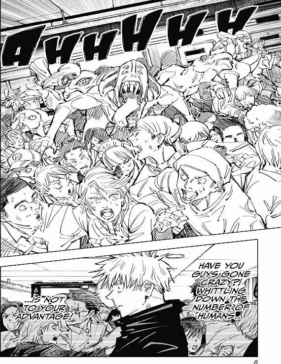
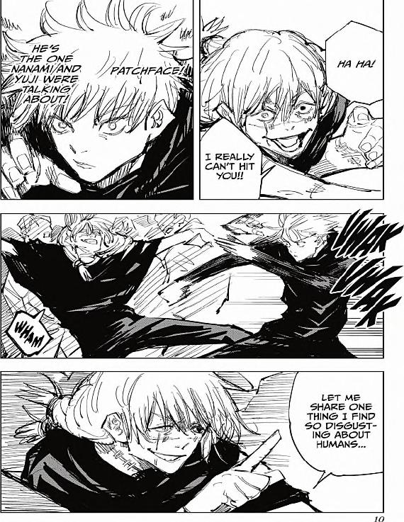
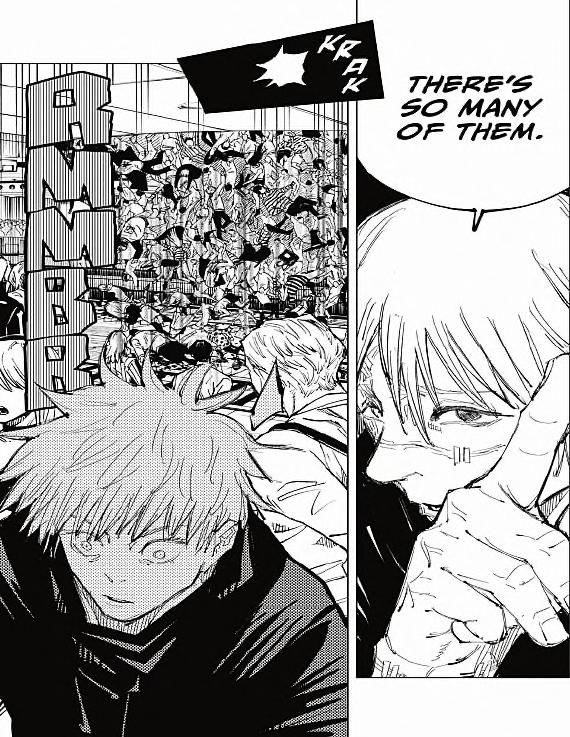

AHHHHH
A group of people are running from a monster in the middle of said crowd.
GOJO'S THOUGHTS: HAVE YOU GUYS GONE CRAZY?! WHITTLING DOWN THE NUMBER OF HUMANS...
...IS NOT TO YOUR ADVANTAGE!
Gojo walks against the fleeing crowd, looking stressed.

GOJO'S THOUGHTS: HE'S THE ONE NANAMI AND YUJI WERE TALKING ABOUT!
Gojo looks shocked, his right hand moving forwards.
PATCHFACE: HA HA! I REALLY CAN'T HIT YOU!!
WHAM
VWAK VWAK
PATCHFACE: LET ME SHARE ONE THING I FIND SO DISGUSTING ABOUT HUMANS...

KRAK
RMMBR
A mass of people from the crowd is launched upward, Patchface looks back, Gojo is shocked.
PATCHFACE: THERE'S SO MANY OF THEM.
Patchface points up at the falling crowd, looking smug.